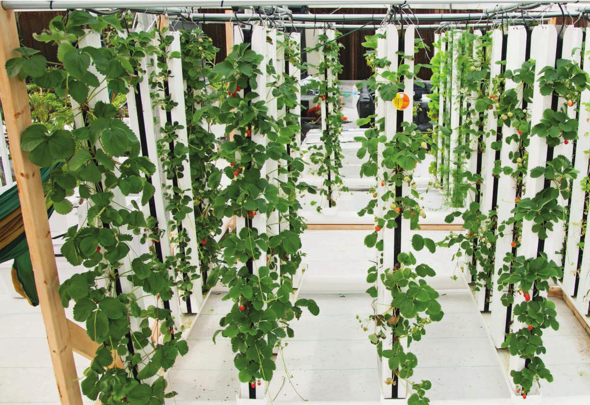

A drip tower circulates water into horizontal tubes at the top of the system. The water seeps down into the tops of a series of vertical growing towers that are filled with growing mats to absorb and hold the water and provide rooting material for the plants. The water runoff is captured in troughs and is recirculated to the feeder tubes on top. of the garden. The nutrient solution then falls through a series of disks that disperse the water. Tower Garden is a very popular low-pressure vertical aeroponic system. DIY versions of this system are possible, but it sometimes is advantageous to simply purchase a complete system. DRIP TOWERS Drip towers also come in many shapes and sizes. They almost all consist of either a vertical post or bag full of an inert substrate like perlite, coco, or stone wool. The ZipGrow tower is a vertical drip tower that has gained a lot of popularity in the past few years. It uses a plastic matrix and a capillary mat in the middle of a square post. FLOOD AND DRAIN GROW RACKS (see pages 99 to 105) Flood and drain grow racks are a common vertical system in commercial farms. Shown below is an image of a vertical flood and drain system by Growtainer. Many growers create their own versions of these systems. Most of these are constructed out of metal storage shelves, flood tables, and lights. When designing your own flood and drain grow rack, it is important to include shutoff valves for each level. These valves will help you adjust the flow to each level so they all fill in roughly the same amount
